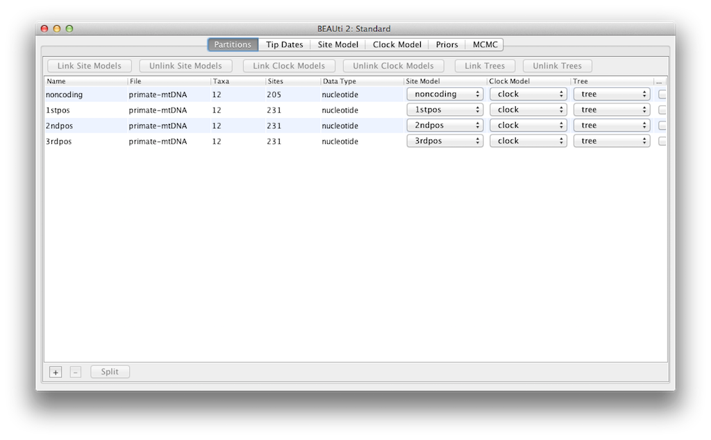

Divergence Dating Tutorial with BEAST 2.2.xAlexei Drummond, Andrew Rambaut, Remco Bouckaert, and Walter Xie |
This tutorial introduces the BEAST software for Bayesian evolutionary analysis through a simple tutorial. The tutorial involves co-estimation of a gene phylogeny and associated divergence times in the presence of calibration information from fossil evidence.
You will need the following software at your disposal:
This tutorial will guide you through the analysis of an alignment of sequences sampled from twelve primate species (see Figure ??). The goal is to estimate the phylogeny, the rate of evolution on each lineage and the ages of the uncalibrated ancestral divergences.
The first step will be to convert a NEXUS file with a DATA or CHARACTERS block into a BEAST XML input file. This is done using the program BEAUti (which stands for Bayesian Evolutionary Analysis Utility). This is a user-friendly program for setting the evolutionary model and options for the MCMC analysis. The second step is to actually run BEAST using the input file generated by BEAUTi, which contains the data, model and analysis settings. The final step is to explore the output of BEAST in order to diagnose problems and to summarize the results.
The program BEAUti is a user-friendly program for setting the model parameters for BEAST. Run BEAUti by double clicking on its icon. Once running, BEAUti will look similar irrespective of which computer system it is running on. For this tutorial, the Mac OS X version is used in the figures but the Linux and Windows versions will have the same layout and functionality.
To load a NEXUS format alignment, simply select the Import Alignment... option from the File menu, or drag the file into the middle of Partitions panel.
The example file called primates-mtDNA.nex is available from the examples/nexus/ directory for Mac and Linux and examples/nexus/for Windows inside the directory where BEAST was installed. This file contains an alignment of sequences of 12 species of primates.
An Add Partition window (Figure ??) would pop up if the related package is installed. If you are using ``pure'' BEAST 2, you can go to the next paragraph. Otherwise, select Add Alignment and click OK to continue.
If there is any coding overlaps in the partitions, the warning message window (Figure ??) will appear. Read and click OK to continue.
Once loaded, five character partitions are displayed in the main panel (Figure ??). The alignment is divided into a protein coding part and a non-coding part,and the coding part is divided in codon positions 1, 2 and 3. You must remove the `coding' partition before continuing to the next step as it refers to the same nucleotides as partitions `1stpos', `2ndpos' and `3rdpos'. To remove the `coding' partition select the row and click the `-' button at the bottom of the table. You can view the alignment by double clicking the partition.

Figure 5: A screenshot of the Partitions tab in BEAUti after linking and renaming the clock model and tree.
Since the sequences are linked (i.e. they are all from the mitochondrial genome which is not believed to undergo recombination in birds and mammals) they share the same ancestry, so the partitions should share the same time-tree in the model. For the sake of simplicity, we will also assume the partitions share the same evolutionary rate for each branch, and hence the same ``clock model''. We will restrict our modelling of rate heterogeneity to among-site heterogeneity within each partition, and also allow the partitions to have different mean rates of evolution.
So, at this point we will need to link the clock model and tree. In the Partitions panel, select all four partitions in the table (or none, by default all partitions are affected) and click the Link Tree Models button and then the Link Clock Models button (see Figure ??). Then click on the first drop-down menu in the Clock Model column and rename the shared clock model to `clock'. Likewise rename the shared tree to `tree'. This will make following options and generated log files more easy to read.
The next step is to set up the substitution model. Then, select the Site Models tab at the top of the main window (we skip the Tip Dates tab since all taxa are from contemporary samples). This will reveal the evolutionary model settings for BEAST. The options available depend on whether the data are nucleotides, or amino acids, binary data, or general data. The settings that will appear after loading the primate nucleotide alignment will be the default values for nucleotide data so we need to make some changes.
Most of the models should be familiar to you. First, set the Gamma Category Count to 4 and then tick the `estimate' box for the Shape parameter. This will allow rate variation between sites in each partition to be modelled. Note that 4 to 6 categories works sufficiently well for most data sets, while having more categories takes more time to compute for little added benefit. We leave the Proportion Invariant entry set to zero.
Then select HKY from the Subst Model drop-down menu. Ideally, a substitution model should be selected that fit the data best for each partition, but here for the sake of simplicity we use HKY for all partitions. Further, select Empirical from the Frequencies drop-down menu. This will fix the frequencies to the proportions observed in the data (for each partition individually, once we unlink the site models). This approach means that we can get a good fit to the data without explicitly estimating these parameters. We do it here simply to make the log files a bit shorter and more readable in later parts of the exercise.
Finally check the `estimate' box for the Substitution rate parameter and select the Fix mean mutation rate check box. This will allow the individual partitions to have their relative rates estimated for unlinked the site models (Figure ??).
At last, hold `shift' key to select all site models on the left side, and click OK to clone the setting from noncoding into 1stpos, 2ndpos and 3rdpos (Figure ??). Go through each site model, as you can see, their configurations are same now.
The next step is to select the Clock Models tab at the top of the main window. This is where we select the molecular clock model. For this exercise we are going to leave the selection at the default value of a strict molecular clock, because this data is very clock-like, and does not need rate variation among branches to be included in the model.
To test for clock-likeness, you can (i) run the analysis with a relaxed clock model and check how much variation among rates are implied by the data (see coefficient of variation for more on this), or (ii) perform a model comparison between a strict and relaxed clock using path sampling, or (iii) use a random local clock model [] which explicitly considers whether each branch in the tree needs its own branch rate.
The Priors tab allows priors to be specified for each parameter in the model. The model selections made in the site model and clock model tabs, result in the inclusion of various parameters in the model, and these are shown in the priors tab (see Figure ??).
Here we also specify that we wish to use the Calibrated Yule model [] as the tree prior. The Yule model is a simple model of speciation that is generally more appropriate when considering sequences from different species. Select this from the Tree prior dropdown menu.
We now need to specify a prior distribution on the calibrated node, based on our fossil knowledge. This is known as calibrating our tree. To define an extra prior, press the small + button below list of priors. You will see a dialog that allows you to define a subset of the taxa in the phylogenetic tree. Once you have created a taxa set you will be able to add calibration information for its most recent common ancestor (MRCA) later on.
Name the taxa set by filling in the taxon set label entry. Call it human-chimp, since it will contain the taxa for Homo sapiens and Pan. In the list below you will see the available taxa. Select each of the two taxa in turn and press the $> >$ arrow button. (Figure ??). Click OK and the newly defined taxa set will be added in to the prior list. As this is a calibrated node to be used in conjunction with the Calibrated Yule prior, monophyly must be enforced, so select the checkbox marked Monophyletic. This will constrain the tree topology so that the human-chimp grouping is kept monophyletic during the course of the MCMC analysis.
To encode the calibration information we need to specify a distribution for the MRCA of human-chimp. Select the Log-normal distribution from the drop down menu to the right of the newly added human-chimp.prior. Click on the black triangle and a graph of the probability density function will appear, along with parameters for the log normal distribution. We are going to set $M=1.78$ and $S=0.085$ which will specify a distribution centred at about 6 million years with a standard deviation of about 0.5 million years. This will give a central 95% probability range covering 5-7 Mya. This roughly corresponds to the current consensus estimate of the date of the most recent common ancestor of humans and chimpanzees (Figure ??).
We should convince ourselves that the priors shown in the priors panel really reflect the prior information we have about the parameters of the model. Finally we will also specify some diffuse ``uninformative'' but proper priors on the overall molecular clock rate (clockRate) and the speciation rate (birthRateY) of the Yule tree prior. For each of them, select Gamma from the drop-down menu and using the arrow button, expand the view to reveal the parameters of the Gamma prior. For both the clock rate and the Yule birth rate set the Alpha (shape) parameter to 0.001 and the Beta (scale) parameter to 1000 (Figure ??).
By default each of the gamma shape parameters has an exponential prior distribution with a mean of 1. This implies (see Figure 3.7) we expect some rate variation. By default the kappa parameters for the HKY model have a log normal(1,1.25) prior distribution, which broadly agrees with empirical evidence [] on the range of realistic values for transition/transversion bias. These default priors are kept since they are suitable for this particular analysis.
The next tab, MCMC, provides more general settings to control the length of the MCMC run and the file names.
Firstly we have the Chain Length. This is the number of steps the MCMC will make in the chain before finishing. How long this should be depends on the size of the data set, the complexity of the model and the quality of answer required. The default value of 10,000,000 is entirely arbitrary and should be adjusted according to the size of your data set. For this data set let's set the chain length to 6,000,000 as this will run reasonably quickly on most modern computers (a few minutes).
The Store Every field determines how often the state is stored to file. Storing the state periodically is useful for situations where the computing environment is not very reliable and a BEAST run can be interrupted. Having a stored copy of the recent state allows you to resume the chain instead of restarting from the beginning, so you do not need to get through burn-in again. The Pre Burnin field specifies the number of samples that are not logged at the very beginning of the analysis. We leave the Store Every and Pre Burnin fields set to their default values. Below these are the details of the log files. Each one can be expanded by clicking the black triangle.
The next options specify how often the parameter values in the Markov chain should be displayed on the screen and recorded in the log file. The screen output is simply for monitoring the programs progress so can be set to any value (although if set too small, the sheer quantity of information being displayed on the screen will actually slow the program down). For the log file, the value should be set relative to the total length of the chain. Sampling too often will result in very large files with little extra benefit in terms of the accuracy of the analysis. Sample too infrequently and the log file will not record sufficient information about the distributions of the parameters. You probably want to aim to store no more than 10,000 samples so this should be set to no less than chain length / 10,000.
For this exercise we will set the screen log to 10,000 and the trace log to 1,000. The final two options give the file names of the log files for the sampled parameters and the trees. These will be set to a default based on the name of the imported NEXUS file. We use Primates.log and Primates.trees here.
We are now ready to create the BEAST XML file. To do this, select the Save option from the File menu. Check the default priors, and save the file with an appropriate name (we usually end the filename with .xml, i.e., Primates.xml). We are now ready to run the file through BEAST.
Now run BEAST and when it asks for an input file, provide your newly created XML file as input. BEAST will then run until it has finished reporting information to the screen. The actual results files are save to the disk in the same location as your input file. The output to the screen will look something like this:
BEAST v2.2.0, 2002-2014
Bayesian Evolutionary Analysis Sampling Trees
Designed and developed by
Remco Bouckaert, Alexei J. Drummond, Andrew Rambaut and Marc A. Suchard
Department of Computer Science
University of Auckland
remco@cs.auckland.ac.nz
alexei@cs.auckland.ac.nz
Institute of Evolutionary Biology
University of Edinburgh
a.rambaut@ed.ac.uk
David Geffen School of Medicine
University of California, Los Angeles
msuchard@ucla.edu
Downloads, Help & Resources:
http://beast2.org/
Source code distributed under the GNU Lesser General Public License:
http://github.com/CompEvol/beast2
BEAST developers:
Alex Alekseyenko, Trevor Bedford, Erik Bloomquist, Joseph Heled,
Sebastian Hoehna, Denise Kuehnert, Philippe Lemey, Wai Lok Sibon Li,
Gerton Lunter, Sidney Markowitz, Vladimir Minin, Michael Defoin Platel,
Oliver Pybus, Chieh-Hsi Wu, Walter Xie
Thanks to:
Roald Forsberg, Beth Shapiro and Korbinian Strimmer
Random number seed: 777
12 taxa
898 sites
413 patterns
TreeLikelihood uses beast.evolution.likelihood.BeerLikelihoodCore4
TreeLikelihood uses beast.evolution.likelihood.BeerLikelihoodCore4
TreeLikelihood uses beast.evolution.likelihood.BeerLikelihoodCore4
TreeLikelihood uses beast.evolution.likelihood.BeerLikelihoodCore4
===============================================================================
Citations for this model:
Bouckaert RR, Heled J, Kuehnert D, Vaughan TG, Wu C-H, Xie D, Suchard MA,
Rambaut A, Drummond AJ (2014) BEAST 2: A software platform for Bayesian
evolutionary analysis. PLoS Computational Biology 10(4): e1003537
Heled J, Drummond AJ (2012) Calibrated Tree Priors for Relaxed Phylogenetics
and Divergence Time Estimation. Systematic Biology 61(1):138-149.
Hasegawa M, Kishino H, Yano T (1985) Dating the human-ape splitting by a
molecular clock of mitochondrial DNA. Journal of Molecular Evolution
22:160-174.
===============================================================================
Writing file /Primates.log
Writing file /Primates.trees
Sample posterior ESS(posterior) likelihood prior
0 -7924.3599 N -7688.4922 -235.8676 --
10000 -5529.0700 2.0 -5459.1993 -69.8706 --
20000 -5516.8159 3.0 -5442.3372 -74.4786 --
30000 -5516.4959 4.0 -5439.0839 -77.4119 --
40000 -5521.1160 5.0 -5445.6047 -75.5113 --
50000 -5520.7350 6.0 -5444.6198 -76.1151 --
60000 -5512.9427 7.0 -5439.2561 -73.6866 2m39s/Msamples
70000 -5513.8357 8.0 -5437.9432 -75.8924 2m39s/Msamples
...
5990000 -5516.6832 474.6 -5442.5945 -74.0886 2m40s/Msamples
6000000 -5512.3802 472.2 -5440.8928 -71.4874 2m40s/Msamples
Operator Tuning #accept #reject total prob.acc
ScaleOperator(treeScaler.t:tree) 0.703 39935 174155 214090 0.187
ScaleOperator(treeRootScaler.t:tree) 0.644 37329 177166 214495 0.174
Uniform(UniformOperator.t:tree) 479419 1668915 2148334 0.223
SubtreeSlide(SubtreeSlide.t:tree) 9.922 272787 801404 1074191 0.254
Exchange(narrow.t:tree) 744 1074261 1075005 0.001
Exchange(wide.t:tree) 9 214594 214603 0.000
WilsonBalding(WilsonBalding.t:tree) 4 214548 214552 0.000
ScaleOperator(KappaScaler.s:noncoding) 0.352 1739 5375 7114 0.244
DeltaExchangeOperator(FixMeanMutationRatesOperator) 0.425 17277 126203 143480 0.120
ScaleOperator(gammaShapeScaler.s:noncoding) 0.375 1729 5428 7157 0.242
ScaleOperator(CalibratedYuleBirthRateScaler.t:tree) 0.245 58005 156128 214133 0.271
ScaleOperator(StrictClockRateScaler.c:clock) 0.706 50080 164952 215032 0.233
UpDownOperator(strictClockUpDownOperator.c:clock) 0.589 50809 163882 214691 0.237
ScaleOperator(KappaScaler.s:1stpos) 0.44 1816 5388 7204 0.252
ScaleOperator(gammaShapeScaler.s:1stpos) 0.42 1927 5129 7056 0.273
ScaleOperator(KappaScaler.s:2ndpos) 0.332 1964 5301 7265 0.270
ScaleOperator(gammaShapeScaler.s:2ndpos) 0.303 2033 5177 7210 0.282
ScaleOperator(KappaScaler.s:3rdpos) 0.505 1424 5860 7284 0.195
ScaleOperator(gammaShapeScaler.s:3rdpos) 0.267 1569 5536 7105 0.221
Total calculation time: 964.067 seconds
Note that there is some useful information at the start concerning the alignments and which tree likelihoods are used. Also, all citations relevant for the analysis are mentioned at the start of the run, which can easily be copied to manuscripts reporting about the analysis. Then follows reporting of the chain, which gives some real time feedback on progress of the chain.
At the end, an operator analysis is printed, which lists all operators used in the analysis together with how often the operator was tried, accepted, and rejected (see columns #total, #accept and #reject respectively). The acceptance rate is the proportion of times an operator is accepted when it is selected for doing a proposal. In general, an acceptance rate that is high, say over 0.5 indicates the proposals are conservative and do not explore the parameter space efficiently. On the other hand a low acceptance rate indicates that proposals are too aggressive and almost always result in a state that is rejected because of its low posterior. Both too high and too low acceptance rates result in low ESS values. An acceptance rate of 0.234 is the target (based on very limited evidence provided by []) for many (but not all) operators implemented in BEAST.
Some operators have a tuning parameter, for example the scale factor of a scale parameter. If the final acceptance rate is not near the target, BEAST will suggest a new value for the tuning parameter, which is printed in the operator analysis. In this case, all acceptance rates are good for the operators that have tuning parameters. Operators without tuning parameters include the wide exchange and Wilson-Balding operators for this analysis. Both these operators attempt to change the topology of the tree with large steps, but since the data supports a single topology overwhelmingly, these radical proposals are almost always rejected.
Run the program called Tracer to analyze the output of BEAST. When the main window has opened, choose Import Trace File... from the File menu and select the file that BEAST has created called Primates.log (Figure ??).
Remember that MCMC is a stochastic algorithm so the actual numbers will not be exactly the same as those depicted in the figure.
On the left hand side is a list of the different quantities that BEAST has logged to file. There are traces for the posterior (this is the natural logarithm of the product of the tree likelihood and the prior density), and the continuous parameters. Selecting a trace on the left brings up analyses for this trace on the right hand side depending on tab that is selected. When first opened, the `posterior' trace is selected and various statistics of this trace are shown under the Estimates tab. In the top right of the window is a table of calculated statistics for the selected trace.
Select the clockRate parameter in the lefthand list to look at the average rate of evolution (averaged over the whole tree and all sites). Tracer will plot a (marginal posterior) histogram for the selected statistic and also give you summary statistics such as the mean and median. The 95% HPD stands for highest posterior density interval and represents the most compact interval on the selected parameter that contains 95% of the posterior probability. It can be loosely thought of as a Bayesian analog to a confidence interval. The TreeHeight parameter gives the marginal posterior distribution of the age of the root of the entire tree.
Select the TreeHeight parameter and then Ctrl-click mrcatime(human-chimp) (Command-click on Mac OS X). This will show a display of the age of the root and the calibration MRCA we specified earlier in BEAUti. You can verify that the divergence that we used to calibrate the tree (mrcatime(human-chimp)) has a posterior distribution that matches the prior distribution we specified (Figure ??).
To show the relative rates for the four partitions, select the mutationRate parameter for each of the four partitions, and select the marginal density tab in Tracer. Figure ?? shows the marginal densities for the relative substitution rates. The plot shows that codon positions 1 and 2 have substantially different rates (0.456 versus 0.183) and both are far slower than codon position 3 with a relative rate of 2.941. The noncoding partition has a rate intermediate between codon positions 1 and 2 (0.346). Taken together this result suggests strong purifying selection in both the coding and noncoding regions of the alignment.
0
Figure 16: The marginal prior and posterior densities for the shape ($α$) parameters. The prior is in gray. The posterior density estimate for each partition is also shown: noncoding (orange) and first (red), second (green) and third (blue) codon positions.
Figure 17: The marginal prior and posterior densities for the transition/tranversion bias ($κ$) parameters. The prior is in gray. The posterior density estimate for each partition is also shown: noncoding (orange) and first (red), second (green) and third (blue) codon positions.
What is the estimated rate of molecular evolution for this gene tree (include the 95% HPD interval)?
What sources of error does this estimate include?
How old is the root of the tree (give the mean and the 95% HPD range)?
BEAST also produces a posterior sample of phylogenetic time-trees along with its sample of parameter estimates. These need to be summarized using the program TreeAnnotator. This will take the set of trees and find the best supported one. It will then annotate this representative summary tree with the mean ages of all the nodes and the corresponding 95% HPD ranges. It will also calculate the posterior clade probability for each node. Run the TreeAnnotator program and set it up as depicted in Figure ??.
The burnin is the number of trees to remove from the start of the sample. Unlike Tracer which specifies the number of steps as a burnin, in TreeAnnotator you need to specify the actual number of trees. For this run, you specified a chain length of 6,000,000 steps sampling every 1,000 steps. Thus the trees file will contain 6,000 trees and so to specify a 10% burnin in the top text field.
The Posterior probability limit option specifies a limit such that if a node is found at less than this frequency in the sample of trees (i.e., has a posterior probability less than this limit), it will not be annotated. The default of 0.5 means that only nodes seen in the majority of trees will be annotated. Set this to zero to annotate all nodes.
The Target tree type specifies the tree topology that will be annotated. You can either choose a specific tree from a file or ask TreeAnnotator to find a tree in your sample. The default option, Maximum clade credibility tree, finds the tree with the highest product of the posterior probability of all its nodes.
For node heights, the default is Common Ancestor Heights, which calculates the height of a node as the mean of the MRCA time of all pairs of nodes in the clade. For trees with large uncertainty in the topology and thus many clades with low support, some other methods can result in trees with negative branch lengths. In this analysis, the support for all clades in the summary tree is very high, so this is no issue here. Choose Mean heights for node heights. This sets the heights (ages) of each node in the tree to the mean height across the entire sample of trees for that clade.
For the input file, select the trees file that BEAST created and select a file for the output (here we called it Primates.MCC.tree). Now press Run and wait for the program to finish.
Finally, we can visualize the tree in another program called FigTree. Run this program, and open the Primates.MCC.tree file by using the Open command in the File menu. The tree should appear. You can now try selecting some of the options in the control panel on the left. First of all, expend Trees option in the panel, and check Order nodes and choose Ordering by decreasing. Try selecting Node Bars to get node age error bars. Also turn on Branch Labels and select posterior to get it to display the posterior probability for each node. If you use a non strict clock model then under Appearance you can also tell FigTree to colour the branches by the rate. You should end up with something similar to Figure ??.
An alternative view of the tree can be made with DensiTree, which is part of Beast 2. The advantage of DensiTree is that it is able to visualize both uncertainty in node heights and uncertainty in topology. For this particular dataset, the dominant topology is present in more than 99% of the samples. So, we conclude that this analysis results in a very high consensus on topology (Figure ??).
What is the support for the clade [Homo_sapiens, Pan, Gorilla, Hylobates]?
What is the support for the second most popular topology?
How many topologies are in the tree set?
It is a good idea to rerun the analysis while sampling from the prior to make sure that interactions between priors are not affecting your prior information. The interaction between priors can be problematic especially when using calibrations since it means putting multiple priors on the tree.
Using BEAUti, set up the same analysis but under the MCMC options, select the Sample from prior only option. This will allow you to visualize the full prior distribution in the absence of your sequence data. Summarize the trees from the full prior distribution and compare the summary to the posterior summary tree.
Divergence time estimation using ``node dating" of the type described in this chapter has been applied to answer a variety of different questions in ecology and evolution. For example, node dating with fossils was used in determining the species diversity of cycads [], analysing the rate of evolution in flowering plants [], and investigating the origins of hot and cold desert cyanobacteria [].
This document was translated from LATEX by HEVEA.